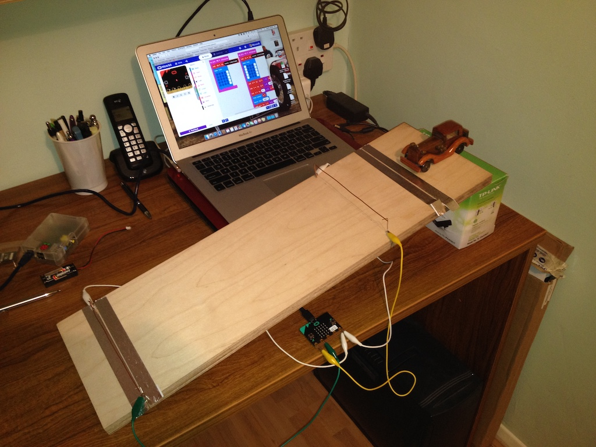

micro:bit Project
In this photo you can see my project. The wooden car will run down the slope and I want the micro:bit to measure its speed. To do this the micro:bit needs to record the time when the car goes through the two gates, one near the top of the slope and one near the bottom. If you look carefully you can see a yellow wire connected to the top gate and a green wire connected to the bottom gate. Each gate is a piece of copper wire that is hinged at the back and just resting on a bent paper clip at the front. As the car rolls down it pushes each gate open. At first I tried using strips of kitchen foil stuck to the board and another piece fixed to the car. But that didn't work.
With the copper wire gate, one side is connected via a white wire to the micro:bit and another wire (yellow or green) connects the other side of the gate to another pin on the micro:bit, making an electric circuit. When the gate is opened the circuit is broken, like switching off a light. I programmed the micro:bit to detect this (you can see a bar on the display as it goes through the gate) and to record the time. The micro:bit then takes the time that the top gate opened from the time that the bottom gate opened and divides the distance between the gates (which I measured) by that time difference. That gives the speed.
The micro:bit then shows the speed on its display, firstly in meters per second (0.48) and then in feet per second (1.56).